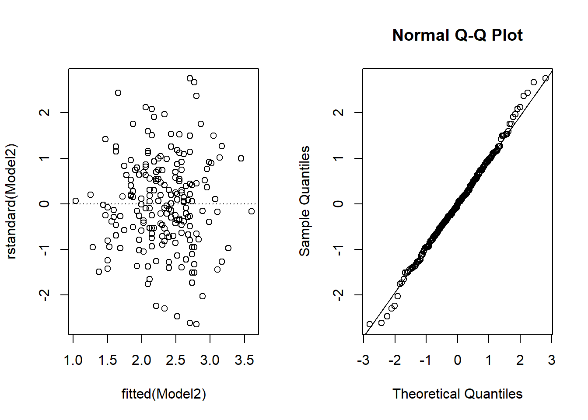

3 Exercise 1: Grades
In Lab 1, we looked at the Grades dataset from the PASWR package, which records the first-semester college GPA and SAT scores for 200 freshmen. The question of interest is to check whether there is a linear relationship between GPA and SAT scores.
To open the dataset, type:
library(PASWR)
GRADES <- GradesQUESTION
- Fit the simple linear regression model on this data again and check if the model assumptions hold true.
Model2 <- lm(gpa~sat, data=GRADES)
plot(rstandard(Model2) ~ fitted(Model2))
abline(h=0, lty=3)
qqnorm(rstandard(Model2))
qqline(rstandard(Model2))
In the standardised residuals versus fitted values plot, we see that the points are fairly evenly scattered above and below the zero line, which suggests it is reasonable to assume that the random errors have mean zero. The vertical variation of the points seems to be small for small and large fitted values and large for fitted values in the middle. This raises slight concerns on constant variability, though we should also take into account that there are less observations in both ends.
The normal probability plot (Q-Q plot) suggests that points roughly lie on diagonal line, though there is some deviation at the extremes. We may conclude that the normality assumption holds with some caution.
- Which of the following comments on the adequacy of the model seems appropriate?
3. Without using the summary() command, calculate the values of A and B in the following regression output table.
| Estimate | Std. Error | t value | |
|---|---|---|---|
| (Intercept) | -1.192 | 0.22245 | A |
| sat | 0.003 | B | 15.912 |
A = B =
4. Construct a 95% confidence interval for the coefficient of sat. Comment on the interval.
We could either calculate manually based on the output from summary() or use confint().
summary(Model2)
0.0030943 + qt(0.975,200-2)*0.0001945
0.0030943 - qt(0.975,200-2)*0.0001945
confint(Model2)The 95% confidence interval for the coefficient of sat is (0.0027,0.0035), indicating that the SAT scores makes a statistically significant contribution in explaining the GPA scores.
5. Which of the following comments on the \(p\)-value for the predictor
sat is appropriate?